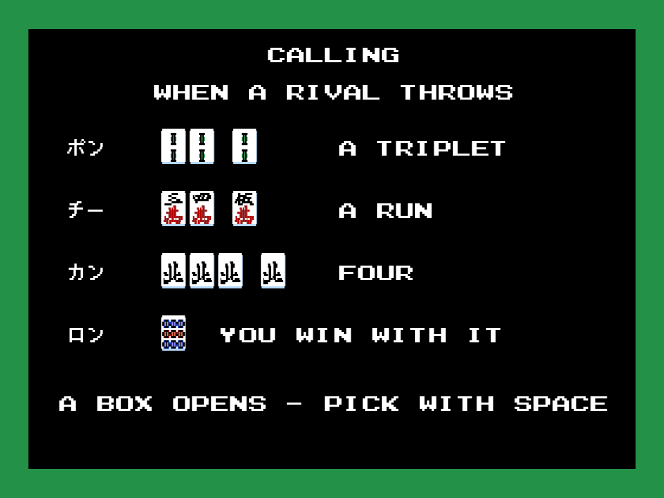
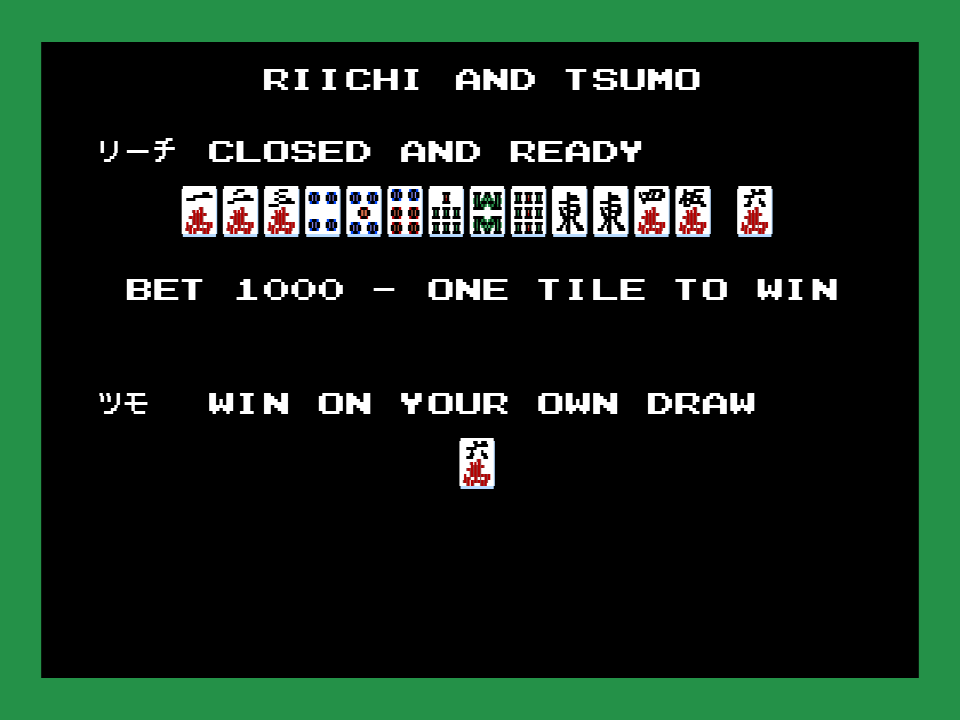
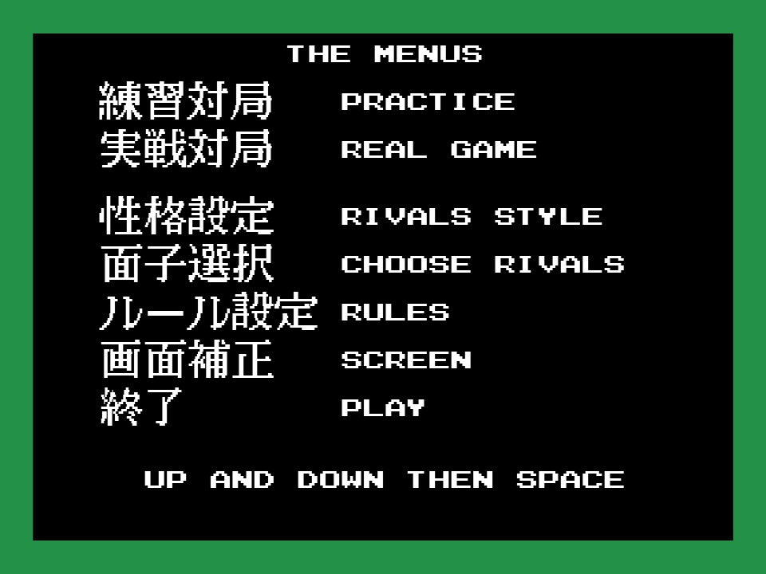
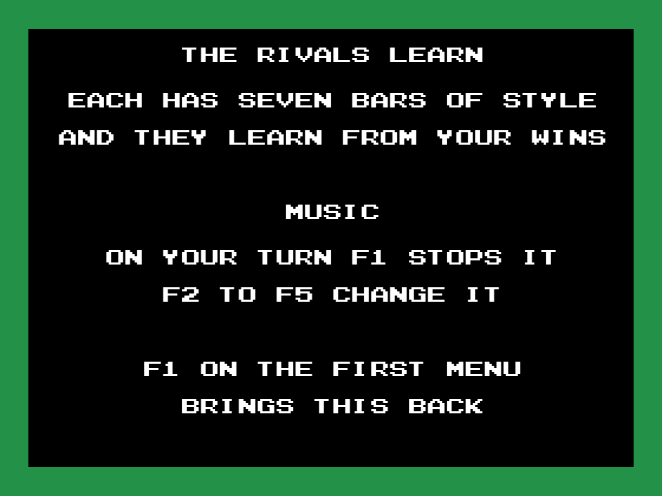

Hai no Majutsushi — tutorial patch
牌の魔術師 (Hai no Majutsushi - Mahjong 2; Konami, 1989, RC-765) is a mahjong game for the MSX2 with all its menus and messages in Japanese. This patch adds a tutorial in English to the cartridge, drawn with the game's own tiles, letters and kanji: press F1 on the first menu and nine screens show the tiles, the winds and dragons, the goal, the sets, the calls, riichi and tsumo, what each menu entry means and the music keys. Space turns the page; after the last one you are back at the menu. The rest of the game is unchanged.
1,313 bytes changed in 6 places · 1,351-byte IPS · all in space the cartridge does not use · no ROM distributed

How to use it
- On the title screen press space: the first menu appears (練習対局, practice; 実戦対局, real game).
- Press F1. The tutorial opens.
- Space for the next screen. After the ninth the menu comes back, and the game carries on as usual.
 |  |  |
 |  |  |
 |  |  |
What you need
- The game ROM, which this repository does not distribute: Hai no Majutsushi - Mahjong 2 (Konami, 1989, RC-765), 131,072 bytes, sha256
7839c843dc787e01765c1ba3efbd26dcf5209d27e38bcee1345db3b3cffdf5db. - Any IPS tool (Lunar IPS, Floating IPS, RomPatcher.js). Apply parche/majutsushi_tutorial.ips to the ROM and you get the patched one, sha256
340bc57b240a376eafd0467d7b5c8b09c3646966dd7591af70f704553f79a0e7.
In openMSX the cartridge needs its mapper (Konami with a DAC):
openmsx -machine C-BIOS_MSX2 -cart majutsushi_tutorial.rom -romtype MajutsushiBuilding it
With Python 3 and pasmo in the PATH, and the ROM in the root as majutsushi.rom:
python tools/construye.py majutsushi.romIt assembles src/tutorial.asm, checks that every place it writes holds what the original cartridge has there (or 0xFF where it uses free space), and writes work/majutsushi_tutorial.rom and the IPS. It refuses any other ROM. The screens are written in tools/textos.py, which packs them into src/datos.inc and refuses any line or row of tiles that does not fit on the screen. python -m unittest discover -s tests runs the 7 tests.
How it works
- The hook. The first menu runs every frame from p00:4396 (entry 1 of the state table at p00:4313). That block, together with the cursor sound and the cursor drawing behind it, is 61 bytes. The patch writes it again in the same 61 bytes:
bit 4,ainstead ofld c,a / and 10h / ld a,c, and the two cursor sprites written withld l,4instead of switching between HL and HL' withexx. That leaves room to look at F1 on entry (bit 0 of 0xC00C, the function keys just pressed) and for the jump to the tutorial. The cursor and its sound move a few bytes, so the three instructions that enter them are corrected (p00:436F, 4834 and 483B). Nothing else changes in bank 0. - Everything on screen is the game's. The tutorial first loads what the game loads to start a hand: the tile sheet and its palette (p00:5746) and the letters and katakana (p00:5A22), into page 1 of the video memory. Each tile (24 × 18 dots), letter (16 × 8) and katakana is then one VDP copy from there with the cartridge's own routine (p00:5151). The kanji of the menus are written by the game's text routine (p00:5ACD) with the strings the cartridge already has in bank 0 (p00:438C, 4391 and the list at p00:59F5). So the patch carries no font and no picture at all.
- Coming back from the game's routines. Loading the table and writing kanji switch banks, and end with banks 1-2-3 in place, which would take the tutorial away from under itself. The tutorial calls them leaving p00:4246 as their return address: that routine puts banks 13-14-15 back and returns to the tutorial.
- Packed to fit. The text goes three letters to two bytes (five bits each, with a 30-character table: the letters, the digits and the hyphen); the katakana and the tiles take one byte each, and the kanji three. The nine screens are 961 bytes. With the code, they fill 1,140 of the 1,157 bytes of 0xFF at the end of bank 14 (0xBB7B), and the rest of the code takes 110 of the 117 at p15:AD8B.
- The free space is measured. In a 15-minute openMSX run of title, menus and play, with a watchpoint on every ROM read, nobody reads the 0xFF at the end of bank 14 or the 0xFF at p15:AD8B.
- On leaving, the tutorial sets the menu back to step 0, so the menu draws itself again, and puts back banks 1-2-3, which are the ones the menu has (measured in openMSX).
- The addresses come from the annotated disassembly of Hai no Majutsushi.
Tested
In openMSX (C-BIOS MSX2): F1 on the first menu opens the tutorial, the nine screens turn with space, the menu comes back, the cursor moves up and down, and choosing practice and then 終了 starts a game as usual. Not tested on a real MSX yet.
Licence
MIT (LICENSE) for the patch, the tools and the documentation. The game belongs to its rights holders: see LEGAL-NOTICE.md.